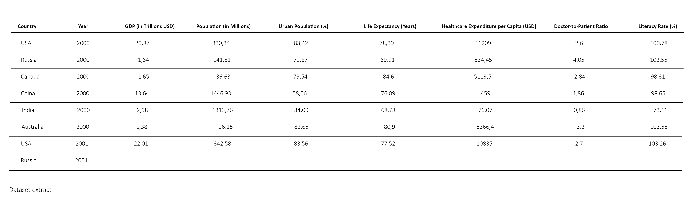

Context
Insurance companies handle a significant amount of transaction data from claims. Understanding patterns in these claims can help companies manage risks, optimize pricing, and detect fraudulent claims.
Problem
How can insurance companies identify key patterns in claims data to better predict high-cost claims and improve risk management?
Goal
The primary goal of this analysis is to identify patterns in claims, and provide actionable insights that insurance companies can use to optimize their operations.
Data
We will be working on the “Claims Data” table from the following Insurance Claims Fraud Dataset from Kaggle.
I - Exploratory Data Analysis (EDA)
We will begin by loading the dataset and examining its structure to understand the variables available for analysis. This initial review will help us identify any missing values, data types, and potential inconsistencies.
Data cleansing
Before diving into the analysis, we must ensure that our data is clean and ready for exploration as missing data can skew our results and lead to incorrect conclusions.
Descriptive Statistics
Now that we have a clean dataset, we want to get a sense of the data and identify trends that could be relevant to our analysis. First of all, we want to identify the basic statistical properties of our claims and premium amounts in order to understand the central tendencies and variability within the dataset.

Distribution of Claim Amounts
Next, we want to analyze the distribution of claim amounts to reveal information about typical claim sizes and identify any unusual values.

Identify Patterns in Claims
To further inform our analysis, we want to identify key patterns that could help in risk management strategies.

Claims by Insurance Type
We also want to understand which types of insurance have the highest claims to help in risk assessment.

Correlation Analysis
Finally, we want to visualize the relationships between premium amounts and claim amounts.

Conclusion and Recommendations
This analysis highlights key patterns in insurance claims that can enhance risk management and pricing strategies for insurers.
To optimize operations, insurers should consider implementing targeted strategies for high-cost claims, especially around peak periods, and adjust premium pricing to align with observed risk patterns.